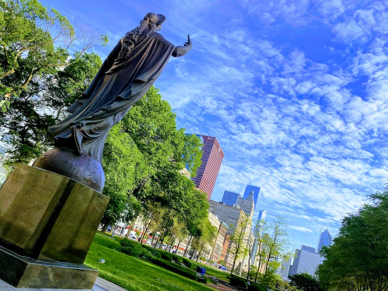

I am 17 years old, I attend Jones College Prep, and I am also graduating this year! I am excited to go to college, although I don't know where I'm going to school after high school yet. Here are a few more things about me.
There are actually six people in my family, me included. There's my parents, my older brother, and my two older sisters. Being the youngest means that I get the butt end of my family's jokes too many times, but I also get to tease my older siblings for being "old" and I can't get in trouble because I'm technically right. Making fun of my siblings is how I usually spend my days around them but we're actually very close with each other. I've spent my entire life with them as the youngest, so it's impossible not to get along with them. They're my best friends.
I am a very "city" type of person, I can't imagine not living in a city environment like Chicago. I've lived here all my life so it's all I've ever known, although I do go to Mexico during the summer and enjoy the time away from the bustling life in the city for a while. Downtown Chicago feels like my safe space, and sometimes before school starts in the morning, I like to just sit at a specific bench with a statue in front of it. It's peaceful and comforting. I always take a photo whenever I go sit there, and one of them is below.
For as long as I can remember, I have always been drawn to videogames. I had a Nintendo DSi as my first gaming "console," and I can just imagine all the NintenDogs I've forgotten and left behind after all these years. As technology and gaming became more advanced, I followed along and continued to enjoy gaming, especially when I would play with friends. Besides this, I also like to read, but mostly fiction since non-fiction usually bores me. I also love playing soccer and volleyball.
Even though I don't really like to think about the future since it scares me, I do acknowledge that it is important to have dreams. When I'm older, I want to travel all over the world and see amazing sights I've only ever heard of in movies. I wanna visit the Statue of Liberty in New York, the Eiffel Tower in Paris, the Gateway Arch in St. Louis, even the Leaning Tower of Pisa in the city of Pisa. I've only ever traveled to Mexico a handful of times, but I want to see more.